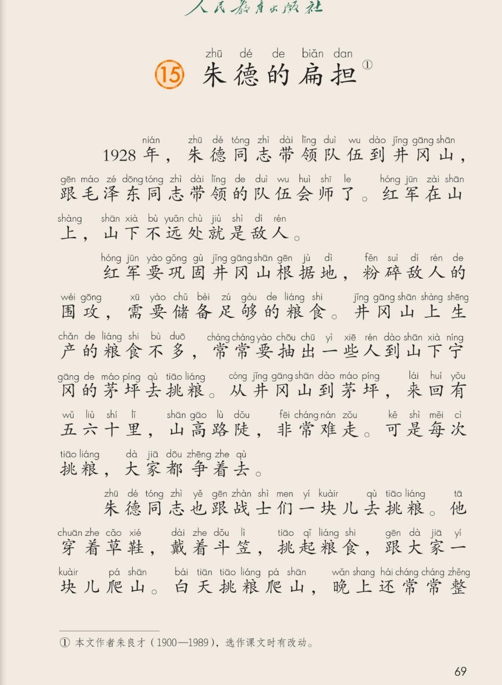
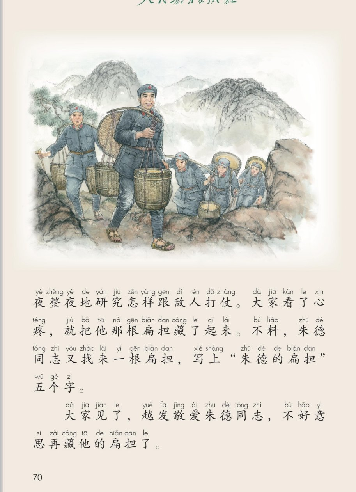
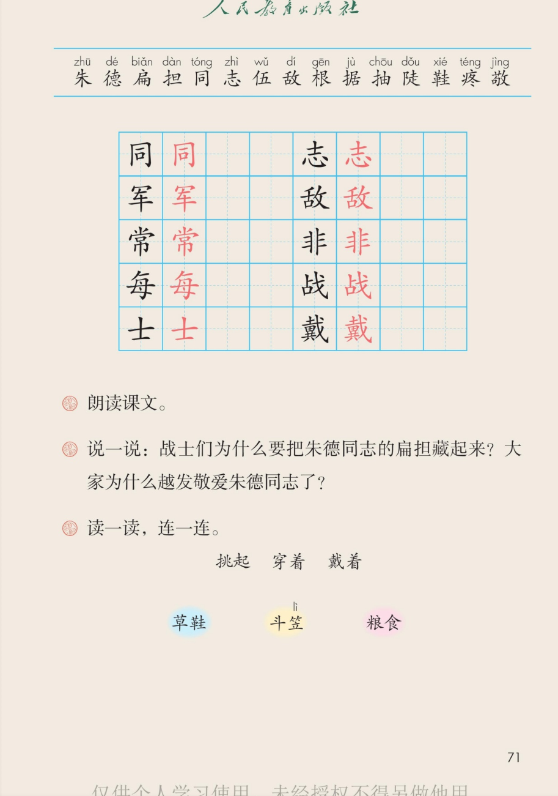

🚩 第 15 课《朱德的扁担》· 有声图文带读
统编版语文 · 第六单元·阅读 · 课本 第 69~71 页 · 作者：朱良才（选作课文时有改动）
课文 4 个自然段
会认字 15
会写字 10
听写词 10
近义词 4 组
深入理解 8 题
本课本领 按顺序讲挑粮的故事
🎧 五步学（可随时点任意一句、一个字、一个词单独听）：
① 听读课文——一句一句读，读到哪一句哪一句发光；开「跟读」后读完一句留时间让你自己读。
② 学字词——15 个会认字、10 个会写字（含书写提示），点一个读一个。
③ 词语·听写·造句——听写 10 个词（读两遍→你写→报答案→听示范句），再听 4 组近义词辨析。
④ 深入理解——8 道题（认知 / 理解 / 运用 / 拓展），开放题答案不唯一，先想后看。
⑤ 讲故事·分角色——按顺序讲"藏扁担"的故事，再分工朗读课文。
① 听读课文（点哪一句，读哪一句）点段前的 ①②③ 听整段
注音只标本课要认、要写的字，读音来自课本第 71 页生字表
🎤 朗读要求（老师标准）
① 读准字音，不添字、不漏字、不回读；
② 逗号稍停，句号停得长一点；
③ 1928 年、五六十里这些数字要读清楚；
④ 山高路陡、整夜整夜、越发敬爱要读得重一点、慢一点；
⑤ 读到最后一段，要读出对朱德同志的敬爱。
①1928年，朱德同志带领队伍到井冈山，跟毛泽东同志带领的队伍会师了。红军在山上，山下不远处就是敌人。
②红军要巩固井冈山根据地，粉碎敌人的围攻，需要储备足够的粮食。井冈山上生产的粮食不多，常常要抽出一些人到山下宁冈的茅坪去挑粮。从井冈山到茅坪，来回有五六十里，山高路陡，非常难走。可是每次挑粮，大家都争着去。
③朱德同志也跟战士们一块儿去挑粮。他穿着草鞋，戴着斗笠，挑起粮食，跟大家一块儿爬山。白天挑粮爬山，晚上还常常整夜整夜地研究怎样跟敌人打仗。大家看了心疼，就把他那根扁担藏了起来。不料，朱德同志又找来一根扁担，写上“朱德的扁担”五个字。
④大家见了，越发敬爱朱德同志，不好意思再藏他的扁担了。
🤔 想一想（点我可跳过）
课本的样子（点一张图，听读这一页）点一张图，听读整页

第 69 页 · 课题与课文开头

第 70 页 · 挑粮插图与课文后半

第 71 页 · 生字表与课后题
📖 人教版《语文》二年级上册 · 课本第 69~71 页 · 图片仅供个人学习，版权归人民教育出版社所有
② 会认字（15 个）点一个字，听读音、词语和课文里的句子
② 会写字（10 个）结构、部首、笔画与书写提示为通用规范，供参考，以教材和老师的指导为准
同
tóng
同志 · 一同
6 画 · 半包围（口）
外框方正，里面写小
军
jūn
红军 · 军人
6 画 · 上下（冖）
秃宝盖宽，车要正
常
cháng
常常 · 平常
11 画 · 上下（巾）
上小中宽，巾对中线
每
měi
每次 · 每天
7 画 · 独体（母）
上小下大，末横托住
士
shì
战士 · 士兵
3 画 · 独体（士）
上横长，下横短
志
zhì
同志 · 志气
7 画 · 上下（心）
士在心上，心要宽
敌
dí
敌人 · 无敌
10 画 · 左右（攵）
左窄右宽，捺要有力
非
fēi
非常 · 是非
8 画 · 独体（非）
两竖要直，短横对齐
战
zhàn
战士 · 战斗
9 画 · 左右（戈）
占要窄，斜钩要长
戴
dài
戴着 · 穿戴
17 画 · 半包围（戈）
笔画要紧凑，斜钩托住
③ 读一读，连一连（课后题）点一行，听读这一组词语
挑起挑起粮食 挑起扁担 挑起担子
穿着穿着草鞋 穿着棉衣 穿着军装
戴着戴着斗笠 戴着帽子 戴着红领巾
③ 听写（10 个词）读两遍 → 你在纸上写 → 报答案 → 听示范句
准备听写 · 共 10 个词
○ ○ ○
点下面的「开始听写」，听到一个词就写一个词。
1同志课文核心词
示范句：朱德同志带领队伍到井冈山。
✏️ 我也能说：谁 + 是一位怎样的同志
2红军会写字
示范句：红军在山上，山下不远处就是敌人。
✏️ 我也能说：红军 + 在哪里做什么
3常常会写字
示范句：晚上，朱德同志还常常整夜整夜地研究怎样跟敌人打仗。
✏️ 我也能说：谁 + 常常 + 做什么
4每次会写字
示范句：每次挑粮，大家都争着去。
✏️ 我也能说：每次 + 做什么时，谁怎么样
5战士会写字
示范句：朱德同志也跟战士们一块儿去挑粮。
✏️ 我也能说：战士们 + 在做什么
6敌人会写字
示范句：山下不远处就是敌人。
✏️ 我也能说：谁 + 把敌人 + 怎么样
7非常会写字
示范句：从井冈山到茅坪，山高路陡，非常难走。
✏️ 我也能说：什么 + 非常 + 怎么样
8戴着会写字
示范句：他穿着草鞋，戴着斗笠，跟大家一块儿爬山。
✏️ 我也能说：谁 + 戴着什么 + 做什么
9扁担会认字
示范句：朱德同志又找来一根扁担，写上五个字。
✏️ 我也能说：一根 + 什么样的扁担
10粮食课文核心词
示范句：红军需要储备足够的粮食。
✏️ 我也能说：谁 + 把粮食 + 送到哪里
③ 近义词辨析（4 组）相同点 / 不一样在哪 / 各造一句
会师 — 会合
相同：都表示两方走到一起、合成一处。
不一样：会师专指两支队伍在约定的地方汇合，是打仗时的说法；会合是一般的说法，人和人、队伍和队伍都能用。
会师：两支红军队伍在井冈山会师了。
会合：我们在校门口会合，一起去看奶奶。
常常 — 经常
相同：都表示次数多、总是这样。
不一样：常常更口语，放在动词前面；经常也可以说经常的事，还能放在句子开头。
常常：朱德同志常常整夜整夜地研究打仗。
经常：我经常帮妈妈做家务。
非常 — 特别
相同：都表示程度很高，就是很的意思。
不一样：非常语气比很更重；特别还多一层跟别的不一样的意思。
非常：山高路陡，非常难走。
特别：今天的天气特别冷。
敬爱 — 尊敬
相同：都是又敬重又喜爱。
不一样：敬爱多用在长辈、老师、领袖身上，带着亲切的爱；尊敬更偏重佩服、有礼貌，对人、对职业都能用。
敬爱：大家越发敬爱朱德同志。
尊敬：我们尊敬每一位老师。
③ 词语拓展（说一说，记一记）
课文四字词山高路陡 整夜整夜 越发敬爱
数量词一根扁担 五六十里 一些人 一块儿
争着做争着去 抢着挑 帮着抬 跑着去
写动作穿着草鞋 戴着斗笠 挑起粮食 爬山
④ 深入理解（8 题 · 先想后看）标「答案不唯一」的题，说得有道理都对
认知一九二八年，朱德同志带领队伍到了哪里？跟谁的队伍会师了？
看解析
🤔 想一想
解析：
时间：1928 年。
地点：井冈山。会师的另一方：毛泽东同志带领的队伍。
💡 读一件事，先找出什么时候、谁、在哪里、做了什么，这样就不会漏信息
认知从井冈山到茅坪挑粮，来回有多远？路好走吗？
看解析
🤔 想一想
解析：
路程：来回五六十里。
路况：山高路陡，非常难走。
💡 五六十里是很远的路，山高路陡又很难走——两个信息放在一起，才明白挑粮有多不容易
理解井冈山上粮食不多，为什么还要到山下去挑粮？
看解析
🤔 想一想
解析：
要用得多：要巩固根据地、粉碎敌人的围攻，得储备足够的粮食。
山上产得少：井冈山上生产的粮食不多。
所以：只能抽出一些人，到山下的茅坪去挑。
💡 读懂原因和结果，就能用自己的话说清楚一件事为什么要这么做
理解路那么远、那么难走，为什么每次挑粮大家都争着去？
看解析
🤔 想一想
解析（说出一点就很好）：
粮食要紧：没有粮食就守不住根据地。
抢着吃苦：红军战士不怕苦、不怕累，都愿意多出力。
心里装着集体：为集体做事最光荣，所以争着去。
理解战士们为什么要把朱德同志的扁担藏起来？
看解析
🤔 想一想
解析：
心疼他：白天挑粮爬山，晚上还整夜研究打仗。
想办法让他歇一歇：扁担藏了，他就挑不成了。
藏的是扁担，装的是关心。
💡 读文章时想一想人物为什么做这件事，能读出藏在后面的心意
运用照课文的样子，用“挑着、穿着、戴着”各说一句话。
看解析
🤔 想一想
参考答案（各一句即可）：
挑着：爷爷挑着两筐青菜从地里回来。
穿着：妹妹穿着一件红裙子，很好看。
戴着：姐姐戴着一副小眼镜在看书。
🌈 答案不唯一，说得有道理都对
运用用“先……再……接着……最后……”说一说朱德同志的一天。
看解析
🤔 想一想
参考答案：
先穿上草鞋、戴上斗笠；再挑起粮食，跟大家一块儿爬山。
接着走完来回五六十里，把粮食挑回山上；最后晚上整夜研究怎样打仗。
💡 说一天里的事，用上顺序词，条理就清楚了
🌈 答案不唯一，说得有道理都对
拓展一根普通的扁担，为什么让战士们越发敬爱朱德同志？
看解析
🤔 想一想
参考答案（三种思路，任选一种）：
不搞特殊：领导也跟战士一样挑粮，一样穿草鞋、戴斗笠。
抢着吃苦：白天挑粮，晚上整夜研究打仗，比战士还累。
上下一条心：扁担上写名字，就是写下了同甘共苦的决心。
🌈 答案不唯一，说得有道理都对
⑤ 按顺序讲故事（先说会师，再说藏扁担）
💬 讲故事支架：先说 1928 年会师井冈山 → 再说山上粮食不够、要下山去挑 → 接着说路远又难走，可大家都争着去，朱德同志也去了 → 最后说大家藏扁担、他又写上名字，大家越发敬爱他。
⑤ 分工朗读课文点一个角色，听他读这一部分
🚩 开篇讲解员
“1928年，朱德同志带领队伍到井冈山……”
💬 要读得庄重、清楚，像在讲一件大事
🍚 缺粮讲解员
“红军要巩固井冈山根据地……”
💬 前三句读得平稳，最后一句“争着去”读得响亮、有劲
🧺 挑粮讲解员
“朱德同志也跟战士们一块儿去挑粮……”
💬 “也”和“整夜整夜”要读得重一点，读出他又累又肯干
😢 心疼讲解员
“大家看了心疼，就把他那根扁担藏了起来……”
💬 前一句读得轻、慢；后一句“不料”读出意外，“又找来”读得坚决
⭐ 敬爱讲解员
“大家见了，越发敬爱朱德同志……”
💬 要读出又敬又爱，还有点不好意思